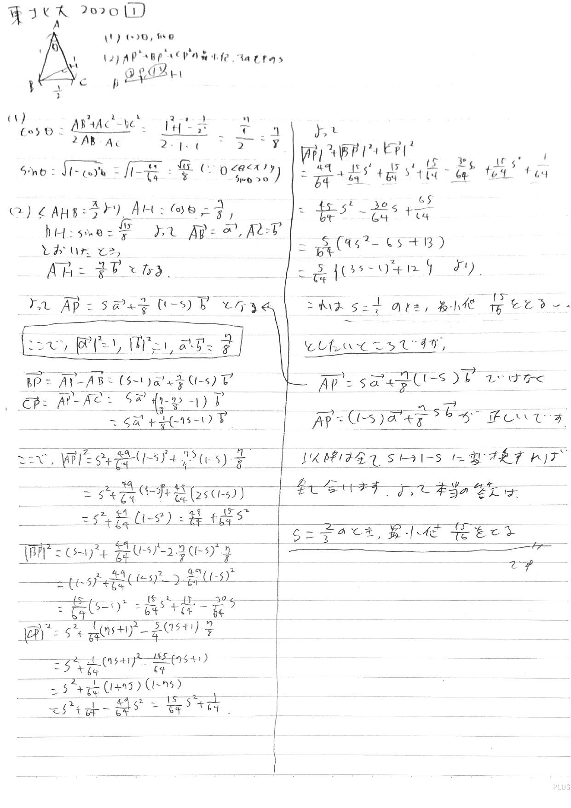

東北大学の解答
6問あったんやな。問6はすこpdf版
各問題の解答と解説と訂正
問1
ベクトルの問題。致命的なミスをしているせいで$s$と$1-s$が入れ替わってしまいましたが、そのまま普通に答えを出して訂正するという暴挙に出ました。 実際の入試でこのような訂正をするのは答案を書き直す時間がないときに有効であると言えます（適当）
問2
図形と方程式の問題です。(3)を求めるために(1)(2)がきれいな誘導になっています。あとは気合で場合分けです。
問3
不等式の問題。大学数学脳になると「こんなの十分大きな$n$には成り立たんでええやろ！！！」ってなる。 具体的な証明計算はなかなかハードでした。あと$(a,b,n)$の順番なのに$(n,a,b)$の順番になっているのは気にしない。
問4
数学Aでよく出てきそうな問題。紙にも書いてあるように(1)(2)と(3)(4)の繋がりが皆無で実質小問集合になっている印象だった。
問5
複素数の問題。(2)は円であることを示す布石である。(3)で円のどの部分かを示すのが大変。
問6

ベータ関数の亜種です。実際に小数の階乗を計算することができて、 $$\left(\frac{1}{2}\right)!=\frac{\sqrt{\pi}}{2}$$ となって、$\sqrt{\pi}$が出てくることがわかります。
2020年のページに戻る
解答速報のページに戻る
トップページに戻る